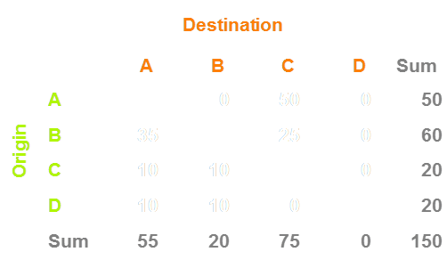
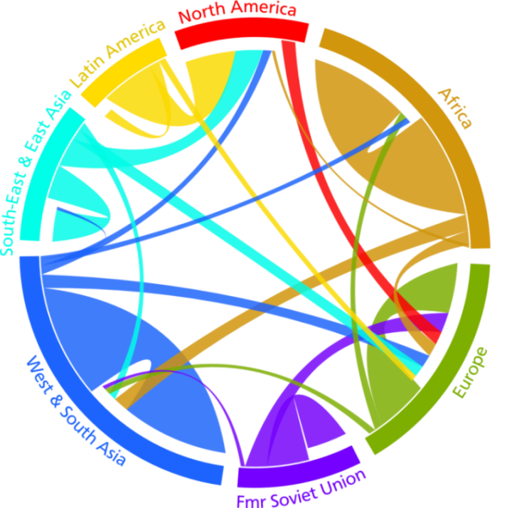
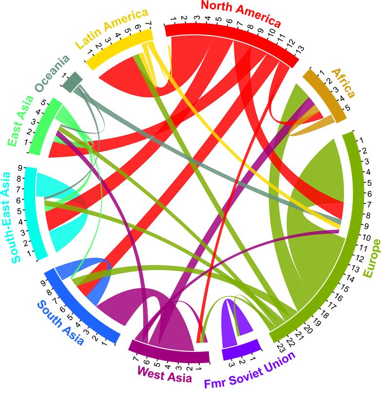

Estimating and Visualising Migration Flow Data
Nikola Sander1, Guy Abel1, Ramon Bauer1 & Johannes Schmidt2
1Wittgenstein Centre | Vienna Institute of Demography
2Null2, Berlin
Migration & Development Conference, June 2014
Global migration has accelerated and diversified!
In the age of globalisation, migration has become:
Limited empirical testing of these assumptions!
Largely due to a lack of global flow data.
So, what data are available on global migration flows?
Most widely available are data on migrant stocks
Captured in censuses, registers and surveys
Comparing country of birth with country of current residence
Complete and harmonised datasets published by UN (1990-2010) and World Bank (1960-2000)
An accumulative measure of migration over several decades that cannot capture contemporary trends!
Migrant flow data much less widely available
Censuses only capture inflows, registers use varying definitions
Harmonisation exist for European flows (IMEM)
Outside Europe only unharmonised data for selected countries
Estimating flows from stocks
|
UN bilateral stock data
lifetime transitions
1990, 2000, 2010
more than 200 countries |
➜ |
New global flow estimates
5-year transitions
1990-95 to 2005-10
196 countries |

A hypothetical migrant stock table for 4 countries, 2000

A hypothetical migrant stock table for 4 countries, 2000 & 2010

A hypothetical migrant stock table for 4 countries, 2000 & 2010
A hypothetical migrant stock table for 4 countries, 2000 & 2010

From stocks to flows

From stocks to flows

Estimated flow matrix

Estimated global flow matrix for 196 countries
The Emigrants of the World, 1858.
by Charles Joseph Minard

Migration within and between world regions in
1990-1995

Migration within and between world regions in
1995-2000
Migration within and between world regions in
2000-2005
Migration within and between world regions in
2005-2010

Intensity of global migration flows, 1990-2010
Total migrants in mio.
|
Crude migration rate
|
Crude migration rate
North America
Latin America
|
Europe
Fmr Soviet Union
|
West & South Asia
East & SE Asia
|
Africa
|
Visualising remittances flows

/